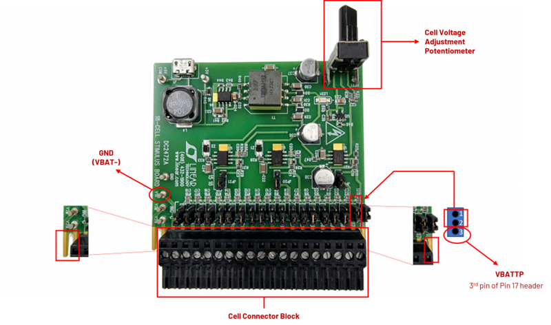

The AD-BMSE2E3W-SL is a BMS reference design for light electric vehicles (LEVs). With a voltage range of 72 V to 96 V, this solution is suitable for electric 2-wheeler and 3-wheeler vehicles with high current capacity ranging up to 100 A.
This single-board system utilizes the best-in-class ADBMS6830 cell monitoring chip that is capable of monitoring up to 2x 16-channel. This board also features battery pack monitoring using the ADBMS2950. The ADBMS6822 dual isoSPI transceiver provides a built-in 2-wire reversible isoSPI connection, which simplifies the communication of BMS parts in a daisy chain configuration before sending the data to SPI lines in the microcontroller.
The on-board MAX32690 MCU, when loaded with the firmware, can perform BMS measurements such as cell voltage (average and filtered), and pack voltage and pack current measurement. The board also has a charge, pre-charge, and discharge mode that can be controlled by the ADBMS2950 pack monitor chip.
The AD-BMSE2E3W-SL is designed to perform either in embedded mode or using a GUI, where it calculates the battery’s State of Charge (SoC) and State of Health (SoH) through enhanced coulomb counting technique.
Features
Variable 72 V to 96 V regulated voltage range, suitable for E2W/E3W applications
ASIL-D compliant and automotive grade BMS chip
Built-in charge/pre-charge, and discharge circuitry
1.8 mV total measurement error for cell voltage monitoring
High performance cell/pack voltage and current monitoring
On-board isoSPI communication
Low Power Cell Monitoring (LPCM) capability
GPIO Controllable FET Monitoring
ADBMS6830 GPIO input ready for NTC sensors
Low Power MAX32690 MCU
UART and CAN Communication
SOC and SOH through Enhanced Coulomb Counting Technique
E2W/E3W Basic System Behavior Modes
Embedded Application-ready (via CLI)
GUI capable of the following measurements and fault detection:
Cell Monitoring Voltage and Current
Pack Monitoring Charge Current Monitoring
Discharge Current Monitoring
Temperature Monitoring
Cell OV/UV Detection
Cell/GPIO Open-wire Detection
Cell Balancing
Applications
Electric and hybrid 2-wheeler vehicles
Electric and hybrid 3-wheeler vehicles
Light electric vehicles
System Architecture
Figure 2 AD-BMSE2E3W-SL Simplified Block Diagram
Table 1 Specifications
SYSTEM
Parameter
Min
Typical
Max
Unit
Notes
System Vin+ Supply Voltage from Battery
60
100
V
Input voltage supply from battery
Battery Emulator System Output Voltage
~66
92
V
Safe output voltage from Battery Emulator
Current Discharge
50
100
A
Current rating that the BMS can deliver at discharge mode
Current Charge
0.3
50
100
A
Current rating that the BMS can deliver at pre-charge/charge mode
Pre-Charge Resistor
3×33
Ω
Charge Voltage Input
100
V
Discharge Voltage Output
65
92
V
Regulated voltage range
FET Discharge Rise Time
42
mS
FET Driver Discharge Input
5
V
Coming from GPIO of ADBMS2950
FET Pre-Charge/Charge Rise Time
88
mS
FET Driver Pre-Charge/Charge Input
5
V
Coming from GPIO of ADBMS2950
FET V(gs) range
-20
20
V
Coming from GPIO of ADBMS2950
FET Rds(on) range
4.8
mΩ
Coming from GPIO of ADBMS2950
ADBMS6830 Cell Monitor
Total Supply Voltage, V+ to V−
-0.3
85
V
VREG Supply
4.5
5
5.5
V
VREF1, VREF2
3
3.3
Supply to internal ADCs
VRES/VDD
4.5
5
5.5
V
Temp
-40
125
°C
CPIN Input Range
-2.5
5.5
V
Cell Count
17
32
Min of 17 cells for the system to initiate daisy chain
Drive
-0.3
7
V
Drive voltage range with respect to each cell monitoring V-
ADBMS2950 Pack Monitor
Main Supply Voltage In
14
V
VREG Pack Monitor
4.5
5
5.5
V
Current Input S1A, I1A, I1B
-4
4
V
Current Input S1A, I1A, I1B
-4
4
V
Current Input S2A, I2A, I2B
-4
4
V
Current Input I3A, I3B
-4
4
V
MAX32690 Microcontroller
MCU Supply Voltage from BMS
3.3
5.5
V
MCU IO Supply for 1.8 V
1.6
3
V
MCU VDD Supply
3.3
5.5
V
MCU Supply at 1.2 V
1.1
1.35
V
MCU Supply at 1.0 V
0.9
1.2
V
What’s Inside the Box?
Upon purchase of the AD-BMSE2E3W-SL kit, the package comes with the following boards and accessories:
Figure 3 AD-BMSE2E3W-SL Kit Contents
Components and Connections
Figure 4 Hardware Components and Connections
Table 2 Hardware Part Functions
No.
Part
Function
1
Battery Cell Connector
Connector going to battery cells
2
ADBMS6830 (U1)
BMS 1 Cell Monitoring Chip with LPCM capability
3
ADBMS6830 (U3)
BMS 2 Cell Monitoring Chip with LPCM capability
4
NTC Provision (U1)
Connector for Negative Temperature Coefficient (NTC) Thermistor in ADBMS6830 (U1)
5
NTC Provision (U3)
Connector for Negative Temperature Coefficient (NTC) Thermistor in ADBMS6830 (U3)
6
ADBMS2950 (U5)
Voltage Pack and Current Pack Monitor Chip
7
ADBMS6822 (U10)
Dual isoSPI chip
8
VBAT+ Connector
Positive Terminal Connector for total voltage capacity of the battery pack
9
Rsense Pack Monitor
Resistor Sensing for detecting and monitoring total current in the pack
10
72V to 96V LINK+_OUT Load Connector
Connector going to the load side of the system
11
72V to 96V LINK+_IN Charger Connector
Connector going to the charging side of the system
12
CAN Connector
Three terminal connector provision for CAN_H, CAN_L, and GND communication
13
Micro USB Supply Provision
5V DC USB supply provision
14
UART/SWDIO Connector
Connector for UART/SWDIO communication. Can be used to download program and debugging
15
MAX32690 MCU Chip
Low power/high power MCU chip used as controller for the system
System Evaluation
Follow the setup shown in the diagram below to get the board up and running. Ensure that the hardware parts and equipment are complete based on list of Equipment Needed. The banana plug cables used in this setup only have a maximum rating of 10A. Cables suitable for higher current rating must be used if the intended application operates at range higher than 10A. Note that the AD-BMSE2E3W-SL board can only accommodate up to 100A.
Figure 5 Evaluation Setup
Equipment Needed
1x AD-BMSE2E3W-SL Board
2x DC2472A Battery Cell Emulator Boards
1x MAX32625PICO Programming Adapter with 10-pin SWD cable (loaded with firmware image)
2x Cell Connector Block (18-cell connector)
2x USB Type A to Micro-B cable
2x Stackable Banana Plug to Alligator Clip Cable (BU-P1166-12-2, Red)
1x Stackable Banana Plug to Alligator Clip Cable (BU-P1166-12-0, Black)
7x Top Mount Heatsink (to be installed for high current applications)
1x Laptop or PC running Windows 10
Warning
This reference design has not undergone compliant testing for EMI/ EMC standards for automotive. It is up for the user to do its qualification as the requirements vary depending on its end application or use cases.
All the products described on this page include ESD (electrostatic discharge) sensitive devices. Electrostatic charges as high as 4000V readily accumulate on the human body or test equipment and can discharge without detection.
Although the boards feature ESD protection circuitry, permanent damage may occur on devices subjected to high-energy electrostatic discharges. Therefore, proper ESD precautions are recommended to avoid performance degradation or loss of functionality. This includes removing static charge on external equipment, cables, or antennas before connecting to the device.
Note
For high current applications requiring greater than 50 A, it is advisable to install a heat sink to protect the pre-charge, charge, and discharge MOSFETs from overheating.
The AD-BMSE2E3W-SL Kit has 7 available HEATSINK PIN-FIN W/TAPE (375424B00034G) easy-to-install, adhesive type, aluminum top mount heat sink than can be installed directly on top of the board.
Peel off the protective film from the bottom of each heat sink and firmly press each one on top of the following FETs:
Attach the 5 heat sinks on the top layer of the board (Q4, Q5, Q6, Q7, and Q9),
the remaining 2 heat sinks on the bottom layer of the board (Q3 and Q8).
Preparing the MCU
By default (upon purchase), the AD+BMSE2E3W+SL board comes with a MAX32625PICO programmer adapter that is loaded with firmware image.
Otherwise, if you are using a new MAX32625PICO programmer (that is not part of the original kit), make sure to flash it first with the correct firmware image before connecting it to the AD-BMSE2E3W-SL board. If you do not know how to load the image, follow the instructions below:
Do not connect the MAX32625PICO to the AD-BMSE2E3W-SL Board yet.
Connect the MAX32625PICO to the Host PC using the micro USB to USB cable.
Press the button on the MAX32625PICO. (Do not release the button until the MAINTENANCE drive is mounted)
Release the button once the MAINTENANCE drive is mounted.
Drag and drop (to the MAINTENANCE drive) the firmware image.
After a few seconds, the MAINTENANCE drive will disappear and be replaced by a drive named DAPLINK. This indicates that the process is complete, and the MAX32625PICO can now be used to flash the firmware of the AD-BMSE2E3W-SL Board.
Hardware Setup
The board utilizes the DC2472A battery emulator as input for cell voltage measurement. The DC2472A allows a cell voltage of 1.4 V (min) to 4.2 V (max). Follow below steps to set up the board for cell measurement:
Screw the two cell connector blocks to the two DC2472A battery emulators. Note that the first two terminals and the last terminal of each DC2472A cell connector must be left hanging (refer to below figure). Make sure to also set the last two terminals’ input to low voltage or equivalent range of roughly 1.4V per cell.

Figure 6 DC2472A Battery Emulator Pins
Connect the DC2472A battery emulators to the ADBMSE2E3W-SL board through the cell connector blocks. Then, connect a micro-USB Type B cable to each DC2472A battery emulator and power the boards by connecting the other end of the cables to the Host PC.
Figure 7 Connecting the DC2472A Battery Emulator
Set the DC2472A battery emulators to the lowest voltage by fully turning the Cell Voltage Adjustment Potentiometer counterclockwise.
Attach the MAX32625PICO programmer to the AD-BMSE2E3W-SL board using the 10-pin ribbon SWD cable. Power the MAX32625PICO using a micro-USB to USB cable connected to the Host PC.
Figure 8 Connecting the MAX32625PICO Programmer
Connect the alligator clip cable (red) to the VBATTP Pin or the 3rd of Pin 17 header of the DC2472A battery emulator. Then, insert the other end of the cable (banana jack plug) to TP16 (VBAT+ terminal) of the AD-BMSE2E3W-SL board.
Figure 9 DC2472A’s VBATT+ Supply Connector to AD-BMSE2E3W-SL’s VBAT+ Terminal
Connect the alligator clip cable (black) to the GND (VBAT-) supply of the DC2472A battery emulator. Then, connect the other end of the cable to the Rsense (top side) of the AD-BMSE2E3W-SL.
Figure 10 DC2472A’s VBAT- Supply Connector to AD-BMSE2E3W-SL’s Rsense
Set the DC2472A battery emulators to HIGH voltage or equivalent to 4.1 V per cell by turning the Cell Voltage Adjustment Potentiometer clockwise.
Check the supply for the following test points as described in the diagram and table below. Make sure that the voltage levels are within the specified range.
Figure 11 AD-BMSE2E3W-SL Test Points
Table 3 Hardware Supply Quick Test Point
TP Name
Description
Function
Voltage Range
TP2
U1 ADBMS6830 BMS1_VREG
U1 Input Voltage BMS1_VREG for ADBMS6830
Low voltage: 15 V to 20 V
High voltage: (50 V to 58 V)
TP4
U3 ADBMS6830 BMS2_VREG
U3 Input Voltage BMS2_VREG input for ADBMS6830
0 V to 5 V
TP7
U6 LTC3639 Output
U6 LTC3639 Regulator Voltage Output
4.5 V to 5.5 V
TP8
U9 LT8303 Output
U9 LT8303 Switch Down Regulator Output
3.2 V to 3.5 V
R346
U15 MAX25301A Output
U15 MAX25301A Output 3.3 V going to MCU
3.2 V to 3.5V
(Left Pin)
TP16
VBAT+
Total Voltage Supply from battery
72 V to 92 V (regulated)
Once all steps are completed, you are now ready to use this reference design and run the accompanying software found in the link below:
Note
The AD-BMSE2E3W-SL comes complete with firmware examples and easy-to-use application GUI. Access the software resources and see the setup procedure in the AD-BMSE2E3W-SL Software User Guide.